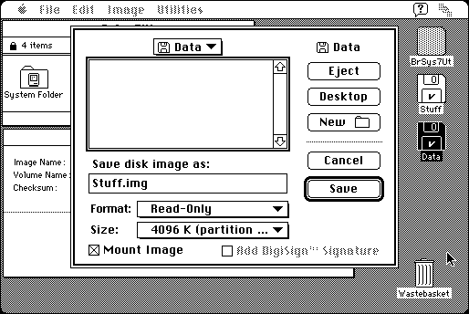

Download (external link)
Disk_Copy_6.3.3.smi.bin (774K) Disk Copy 6.3.3
copyright: Apple Computer, Inc.
mod date: Jan 21, 1999
license: free, but don't redistribute
Disk image utility. For System “7.0.1 or later”. When working with read/write disk images, “7.5 or greater” recommended .
Disk Copy 6.3.3 does not seem to work on a Macintosh Plus with American system software, but strangely it does seem to work with British system software. The same goes for the self mounting image it is packaged as. See the British System 7.0.1 utility disk Recipe for Mini vMac.

Here is the md5 checksum for the download, signed with Gryphel Key 5:
--------- GRY SIGNED TEXT --------- 25d39bd6577ac64e0b0bb75e520898e1 Disk_Copy_6.3.3.smi.bin ------- BEGIN GRY SIGNATURE ------- Gry/4Xa8CFcUzxdN/LXonQYPWe9U1XzQQa03Wmosy0CAFxeNXJj4fNqGWX9ZkvpP igt1wzjtQA77I7Jm3W9VafE9rjuVyssMNigSO4g4sQN+L5h5nf+y4Yb+F+kKKGr0 dxFQPjpVnddQKYpIoL/J3yf7quH9Zf4vCc4YO8ta6VcjjXsHWyFC9W97Vei7LOEJ -------- END GRY SIGNATURE --------